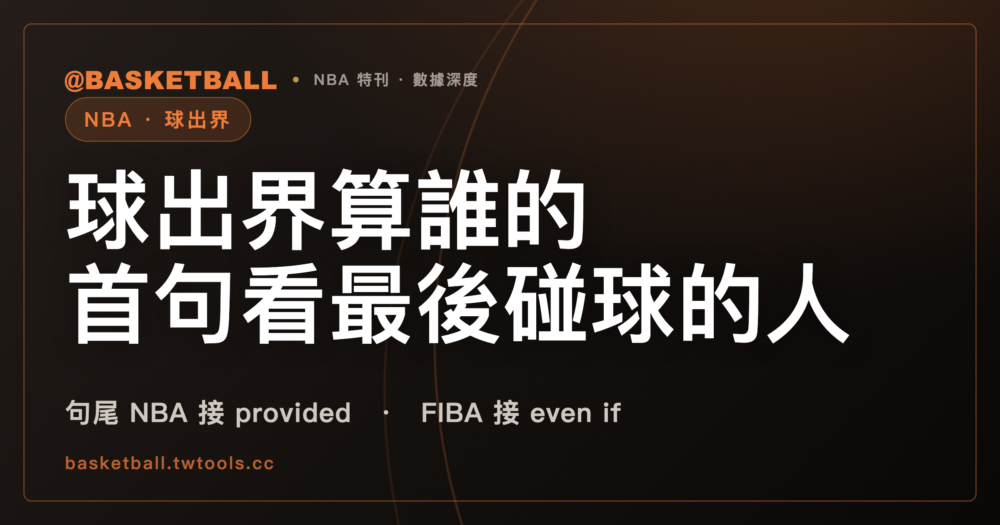

球出界算誰的？NBA 2025-26 與 FIBA 2026 版首句都看最後碰球的人，句尾寫法不同
NBA 2025-26 規則書 Rule 8 §II(c) 首句與 FIBA 2026 版（2026 年 10 月 1 日生效）Art. 23.2.1，都把球出界歸給出界前最後與球接觸的球員；NBA 句以 provided 子句收尾，FIBA 句以 even if 子句收尾。裁判不確定誰最後碰球時，兩本規則書各自接到不同的條文。

新手村｜規則入門・球出界算誰的（最後觸球）
本文依據 NBA 2025-26 規則書（Official Playing Rules）與 FIBA 2026 版 Official Basketball Rules v1-1。FIBA 版封面寫明 Valid as of 1st October 2026，也就是 2026 年 10 月 1 日生效。兩份都是本機保存的全文文字檔，取得日 2026 年 10 月 4 日。
球出界，算誰的？「最後觸球者」是中文慣稱。NBA 2025-26 規則書與 FIBA 2026 版的出界條文裡沒有這個名詞，NBA 的 Rule 4（Definitions）目錄也沒有 touch 或 last touch 的條目。NBA 的首句寫 the last player to touch it，FIBA 的首句寫 the last player to touch or be touched by the ball。兩句各自在句尾處理同一種情形：球其實是碰到球員以外的東西才出界。NBA 用 provided 連接，FIBA 用 even if 連接。
這篇文章帶你逐字讀這兩句，再讀裁判不確定誰最後碰球時，兩本規則書各自接到哪一條。讀完之後，你可以拿一個球出界的情境，分別查兩本規則書，說出條文把誰寫成造成出界的人，以及存疑時條文接到哪裡。文末有三個假設情境可以自己練習。
球碰到哪些東西算出界：NBA 2025-26 Rule 8 §II(a)(b) 與 FIBA 2026 版 Art. 23.1.2
條文的順序是先寫球何時算出界，再寫誰造成出界：NBA 在 Rule 8 §II 的 (a)(b) 兩款之後才是 (c)，FIBA 在 Art. 23.1.2 之後才是 23.2。兩份清單的措辭不同。
| 條文 | 球算 out-of-bounds 的情形 |
|---|---|
| NBA 2025-26 Rule 8 §II(a) | 球碰到 out-of-bounds 的球員或任何其他人、地板、在界線上／上方／外側的任何物件，或籃板支撐物與籃板背面 |
| NBA 2025-26 Rule 8 §II(b) | 球在籃板正後方彈出或通過（任何方向），或由下方進入 cylinder |
| FIBA 2026 版 Art. 23.1.2 | 球碰到 out-of-bounds 的球員或任何其他人；地板或界線上／上方／外側的任何物件；籃板支撐物、籃板背面或場地上方的任何物件 |
兩份清單都把「球碰到出界的球員」列為球出界的一種情形。換句話說，球可以因為碰到球員而出界，也可以因為碰到地板或物件而出界。後面兩本規則書的首句句尾，處理的就是這兩種來源中的第二種。
最後碰球的球員造成出界：NBA 2025-26 Rule 8 §II(c) 首句帶著 provided 前提
NBA 2025-26 規則書 Rule 8 §II(c) 的第一句這樣寫（"The ball is caused to go out-of-bounds by the last player to touch it (including by touching the player’s hair or uniform) before it goes out, provided it is out-of-bounds because of touching something other than a player."）。
拆開來有三個部分。主句說，球被視為由出界前最後碰到球的球員造成出界。括號說，這個「碰到」包含碰到該球員的頭髮或球衣。句尾的 provided 子句說前提：球是因為碰到球員以外的東西而出界。
把這句縮成「最後觸球者造成出界」，會同時漏掉括號和句尾。provided 子句是這句的適用前提，寫在同一個句子裡，不是另一款規則。
球碰到站在界上的球員，或手被對手打到，NBA 2025-26 Rule 8 §II(c) 的次句和末句怎麼寫？
次句另外處理球碰到球員的情形（"If the ball is out-of-bounds because of touching a player who is on or outside a boundary, such player caused it to go out."）。中文意思是：球因碰到在界線上或界線外的球員而出界時，該球員造成出界。
末句處理另一種情形，結果寫的是球權（"If a player has his hand in contact with the ball and an opponent hits that part of the hand causing the ball to go out-of-bounds, the team whose player had his hand on the ball will retain possession."）。球員的手與球接觸，對手打到手的那一部分而使球出界時，手在球上那位球員所屬的隊保有球權（retain possession）。
三句放在一起，Rule 8 §II(c) 共寫了三種情形：球因碰到球員以外的東西而出界（首句）、球因碰到界上或界外的球員而出界（次句）、手在球上被對手打到而出界（末句）。
同一本規則書的 Rule 10（Violations and Penalties）也寫到最後觸球。§I 的標題是 Out-of-Bounds，(a) 款寫（"A player shall not be the last to touch the ball before it goes out-of-bounds."），罰則（PENALTY）的第一句是 Loss of ball。
Rule 8 §II(c) 首句的主詞是球（被視為由誰造成出界），Rule 10 §I(a) 的主詞是球員（不得是最後觸球的人），後面附上罰則。Rule 10 的這一句沒有頭髮或球衣的括號，也沒有 provided 子句。
最後碰到球或被球碰到的球員：FIBA 2026 版 Art. 23.2.1 句尾接 even if
FIBA 2026 版 Art. 23.2.1 這樣寫（"The ball is caused to go out-of-bounds by the last player to touch or be touched by the ball before it goes out-of-bounds, even if the ball then goes out-of-bounds by touching something other than a player."）。
中文意思是：球被視為由出界前最後碰到球、或最後被球碰到的球員造成出界；即使球其後是因為碰到球員以外的東西而出界，仍然如此。Art. 23.2.2 另外寫：球因碰到在界線上或界線外的球員、或被這樣的球員碰到而出界時，這位球員造成球出界。
下表把兩邊的字面並排。
| 項目 | NBA 2025-26 Rule 8 §II(c) | FIBA 2026 版 Art. 23 |
|---|---|---|
| 首句的動詞 | the last player to touch it | the last player to touch or be touched by the ball |
| 頭髮或球衣 | 首句括號寫包含 | Art. 23 的條文裡沒有 hand、hair、uniform 這幾個字 |
| 首句的句尾 | provided it is out-of-bounds because of touching something other than a player | even if the ball then goes out-of-bounds by touching something other than a player |
| 球碰到界線上或界線外的球員 | 次句：such player caused it to go out | 23.2.2：this player causes the ball to go out-of-bounds |
| 手在球上被對手打到而出界 | 末句：手在球上那位球員所屬的隊 will retain possession | 本機快照查無對應句（搜尋依據見文末「範圍與版本」） |
兩句的功能如何對照，規則書沒有寫。有人可以主張 provided 與 even if 在實務上給出同一個答案，也可以主張 FIBA 的 be touched by 只是把 NBA 括號裡的頭髮與球衣換一種說法；本文不判斷實務判定是否一致。
球出界後存疑、意見不一或同時碰到：NBA 2025-26 Rule 8 §II(d) 寫 jump ball，另有 EXCEPTION
誰最後碰球看不清楚，或兩個人同時碰到，NBA 2025-26 規則書 Rule 8 §II(d) 把這幾種情形寫在同一句裡（"If the ball goes out-of-bounds and was last touched simultaneously by two opponents, both of whom are inbounds or out-of-bounds, or if the official is in doubt as to who last touched the ball, or if the officials disagree, play shall be resumed by a jump ball between the two involved players in the nearest restraining circle."）。
三個 or 條件是：球最後被兩位對手同時碰到（兩人在界內或界外都可以）；裁判存疑最後是誰碰球；裁判之間意見不一。任一成立，比賽以涉事兩位球員在 nearest restraining circle 的 jump ball 恢復。
這一款之後緊接一行 EXCEPTION，指向 Rule 6 §V(a)(10) 與 Rule 6 §VI(a)(3)。Rule 6 §VI(a)(2) 另外寫了「球出界由雙方造成」的情形，§II(d) 的 EXCEPTION 沒有指向這一款。四處的寫法並排如下。
| 條文 | 情形 | 跳球的圈 |
|---|---|---|
| Rule 8 §II(d) | 球出界，且最後被兩位對手同時碰到、裁判存疑，或裁判意見不一 | nearest restraining circle，涉事的兩位球員 |
| Rule 6 §V(a)(10) | 裁判不確定哪一隊在球出界前最後碰到，且球員無法辨認 | center circle，任兩位對手 |
| Rule 6 §VI(a)(3) | 裁判存疑最後是誰碰球 | 離發生處最近的圈（closest circle） |
| Rule 6 §VI(a)(2) | 球出界由雙方造成（caused by both teams） | 離發生處最近的圈（closest circle） |
規則書沒有寫這四處如何合讀，四處各寫各的。Rule 6 §V 與 §VI 各款的全貌，可以讀站內的跳球與輪流球權一文，其中講 NBA Rule 6 各款與 Rule 8 §II(d) 的段落以 NBA 2025-26 規則書為據。NBA 2025-26 規則書裡，出界判決怎麼用教練挑戰推翻，見教練挑戰一文。
球出界後存疑或意見不一：FIBA 2026 版 Art. 12.4 與 12.6.1 寫兩隊輪流 throw-in
FIBA 2026 版 Art. 12.4 的標題是 Jump ball situations，列出的情形之一是（"The ball goes out-of-bounds and the referees are in doubt or disagree on which of the opponents last touched the ball."）。意思是球出界，而裁判存疑或意見不一，不確定對立雙方的哪一方最後碰球。
這一款只寫 in doubt or disagree，沒有「兩位對手同時碰到」的字樣。Art. 23.2.1 到 23.2.3 的條文也沒有寫，全書其他處本機快照查無。FIBA 側的同時碰到，本文沒有條文可以引。
FIBA 2026 版自己的定義有兩個相近的詞。Art. 12.1.1 寫的 jump ball 是裁判在任意 2 位對手之間拋球；12.4 用的詞卻是 jump ball situation，兩個詞在規則書裡各自出現。12.5 定義 alternating possession：以 throw-in 而不是 jump ball 讓球變成活球。
FIBA 2026 版 Art. 12.6.1 把前面的詞接了起來（"In all jump ball situations teams shall alternate possession of the ball for a throw-in from the place nearest to where the jump ball situation occurs, except directly behind the backboard."）。意思是，在所有 jump ball situations，兩隊輪流取得球權進行 throw-in，地點是最靠近 jump ball situation 發生處，籃板正後方除外。
12.4 到 12.6.1 的連接，是規則書自己用 jump ball situation 這個詞接上的。12.6.2 以後各款（第一次輪到誰、節與節之間、箭頭、違例與犯規）不在本文，細節見站內的跳球與輪流球權一文，該文講 FIBA 的段落以 2024 版為據。
三個假設情境：球碰到對手後出界、碰到站在界上的球員、裁判看不清楚
以下情境都是假設，甲隊、乙隊與球員都是代稱。每題只回答兩本規則書的條文字面寫什麼。
| 假設情境 | NBA 2025-26 規則書 | FIBA 2026 版 |
|---|---|---|
| 一：甲隊球員傳球，球擦過界內乙隊球員的手指，飛出邊線落在界外地板 | 球是因為碰到地板（球員以外的東西）而出界，Rule 8 §II(c) 首句寫最後碰球的乙隊球員造成出界；Rule 10 §I(a) 寫球員不得是最後觸球的人，罰則第一句是 Loss of ball | Art. 23.2.1 寫最後碰球的乙隊球員造成出界；Art. 23 的條文沒有寫出界後球判給誰 |
| 一之二：同一個傳球，球只擦到乙隊球員的球衣 | 首句括號寫包含碰到球衣，乙隊球員仍是最後碰球的人 | Art. 23 沒有寫頭髮或球衣，條文字面沒有答案 |
| 二：乙隊球員傳球，球打到站在邊線上的甲隊球員之後出界 | 球是因為碰到球員而出界，條文寫這個情形的是 §II(c) 次句：該球員造成出界 | Art. 23.2.2 寫：球因碰到或被界線上的球員碰到而出界，這位球員造成球出界 |
| 三：球飛出邊線，裁判看不清最後碰到球的是甲隊還是乙隊球員 | Rule 8 §II(d) 寫 jump ball，涉事兩位球員，nearest restraining circle；EXCEPTION 指向的 Rule 6 §V(a)(10) 寫 center circle、任兩位對手，§VI(a)(3) 寫離發生處最近的圈 | Art. 12.4 列為 jump ball situation；Art. 12.6.1 寫兩隊輪流 throw-in，地點最靠近發生處，籃板正後方除外 |
| 三之二：兩位裁判各自指向不同的球員 | Rule 8 §II(d) 的 the officials disagree，接到同一句的 jump ball | Art. 12.4 的 disagree，接到同一款的 jump ball situation |
| 三之三：甲、乙兩隊球員同時最後碰到球 | Rule 8 §II(d) 的 simultaneously，接到同一句的 jump ball | Art. 12.4 沒有同時碰到的字樣，條文字面沒有答案 |
情境一在兩本規則書的字面都指向乙隊球員，差別是 NBA 還有 Rule 10 的違例與罰則，Art. 23 寫到誰造成出界為止。情境二的兩句字面指向同一位球員。情境三，NBA 的 Rule 8 §II(d)、Rule 6 §V(a)(10)、§VI(a)(3) 各寫一種圈的說法；FIBA 走 12.4 到 12.6.1。
引用 NBA 2025-26 與 FIBA 2026 版的出界首句，連句尾的 provided 與 even if 一起引
本文的讀法是：談 NBA 2025-26 的出界歸屬，把括號和 provided 子句一起帶上；談 FIBA 2026 版，把 or be touched by 和 even if 子句一起帶上。把兩句縮成同一句「最後碰球的人造成出界」，兩邊的差別會消失。
範圍與版本：本文讀的是 NBA 2025-26 規則書的 Rule 8 §II、Rule 10 §I(a) 與 Rule 6 §V、§VI 相關款，以及 FIBA 2026 版 v1-1 的 Art. 23、Art. 12.1、Art. 12.4 到 12.6.1；FIBA 其餘 Article 沒有逐條讀。兩處字面差異以本機全文文字檔搜尋為據：touch or be touched 這個句型，NBA 2025-26 規則書得 0 筆，FIBA 2026 版得 1 筆，就是 Art. 23.2.1；NBA 末句「手在球上被對手打到而出界」的對應詞，以 hand in contact、hits that part、hand on the ball、knock、retain 搜尋 FIBA 2026 版全文，共得兩行（Art. 12.1.2 held ball 的定義句、Art. 11.1），寫的都是其他情形。出界後的發球位置與時間（NBA Rule 8 §III，以及 Rule 10 §I 罰則第二句寫的球判給對手的位置）與球員自己出界的定義不在本文範圍。規則書會隨賽季或修訂版更新，之後以官方最新版為準。
常見問題
NBA 2025-26 的出界歸屬，只看最後碰球的人嗎？
不是只看這一句。依 NBA 2025-26 規則書 Rule 8 §II(c)，首句寫最後碰球的球員造成出界，括號包含頭髮或球衣，句尾 provided 的前提是球因碰到球員以外的東西而出界；次句與末句另外寫球碰到界上或界外的球員，以及手在球上被對手打到而出界的情形。細節見前面讀首句與次句、末句的兩節。
FIBA 2026 版 Art. 23.2.1 和 NBA 的 Rule 8 §II(c) 首句是同一個規定嗎？
兩句的字面不同：NBA 2025-26 寫 the last player to touch it 並以 provided 子句收尾，FIBA 2026 版寫 the last player to touch or be touched by the ball 並以 even if 子句收尾。兩句的功能如何對照，兩本規則書的這幾條沒有寫，本文不判斷實務是否一致。字面並排見讀 FIBA Art. 23.2.1 的那一節。
裁判不確定誰最後碰球時，兩本規則書接到哪一條？
依 NBA 2025-26 規則書，球出界且裁判存疑，Rule 8 §II(d) 寫以 jump ball 恢復，EXCEPTION 另指向 Rule 6 §V(a)(10) 與 §VI(a)(3)，三處的圈各寫各的。依 FIBA 2026 版，Art. 12.4 把這個情形列為 jump ball situation，Art. 12.6.1 寫所有 jump ball situations 由兩隊輪流取得 throw-in。細節見讀 §II(d) 與 Art. 12.4 的兩節。
兩隊球員同時最後碰到球，FIBA 2026 版怎麼處理？
FIBA 2026 版的 Art. 12.4 與 Art. 23.2.1 到 23.2.3 沒有寫同時碰到，12.4 只寫裁判 in doubt or disagree。NBA 2025-26 規則書 Rule 8 §II(d) 才有 simultaneously 的字樣，寫以 jump ball 恢復。FIBA 側本文沒有條文可以引，見讀 Art. 12.4 的那一節。
資料來源
- NBA Official Playing Rules 2025-26 賽季規則書：Rule No. 8 Section II（Ball，本文讀 a 到 d 款；e 款寫板凳上或邊線上的對手干擾球，不在本文範圍）、Rule No. 10 Section I（Out-of-Bounds，a 款與罰則）、Rule No. 6 Section V 與 Section VI（Jump Balls）、Rule No. 4（Definitions 目錄）：本機保存的全文文字檔，取得日 2026 年 10 月 4 日，無可點擊網址。
- FIBA Official Basketball Rules 2026 v1-1（封面 Valid as of 1st October 2026）：Article 11（11.1，僅為搜尋命中處）、Article 12（Jump ball and alternating possession，12.1、12.4 至 12.6.1）、Article 23（Player out-of-bounds and ball out-of-bounds，23.1.2、23.2.1、23.2.2）：本機保存的全文文字檔，取得日 2026 年 10 月 4 日，無可點擊網址。